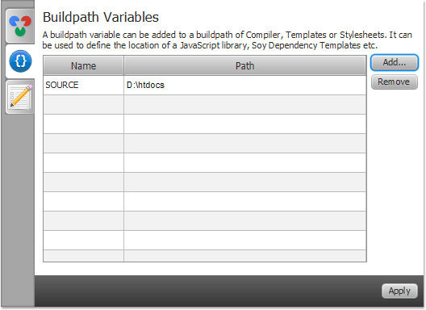
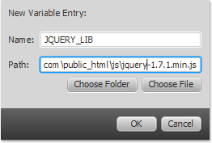
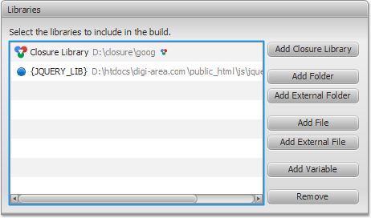

Build Path Variables
In this section, you will learn about configuring Build Path Variables in Closure FX Builder.
The build path for a JavaScript project can include source code
folders and folders containing JavaScript files. Files and Folders
can be specified using file system paths, or by using variables
that refer to locations on the network.
Build Path variables allow you to avoid references to the location of a JavaScript file or folders on your local file system. By using a Build Path variable, you can specify a JS file or folder using only a variable name, such as JQUERY_LIB, rather than specifying the location on your workstation. In this way, you can share build paths across teams and define the variables to refer to the correct location for your particular computer.
Build Path variables allow you to avoid references to the location of a JavaScript file or folders on your local file system. By using a Build Path variable, you can specify a JS file or folder using only a variable name, such as JQUERY_LIB, rather than specifying the location on your workstation. In this way, you can share build paths across teams and define the variables to refer to the correct location for your particular computer.
Configure a Variable
You can define any number of Variable definitions.
- Click
 Settings
button to open Closure FX Preferences
dialog.
Settings
button to open Closure FX Preferences
dialog.
- Select Buildpath Variables
tab.
 - Click Add... button to open Add Variable dialog.
- Enter the variable's name of your choose. For example:
jQuery Library
Click Add... button and locate to the folder (Choose Folder button) or file (Choose File).
 - Click OK and then Apply button to save configured variables.
- Go to your build configuration and choose Build Path tab on the Compiler page.
- Click Add Variable in the Libraries section.
- Choose the variable and click OK.

Notice  triangle and
triangle and  js icons next to the variable's path.
js icons next to the variable's path.
Read Order and Externs page to learn how to manage includes filters.
Read Order and Externs page to learn how to manage includes filters.
Reserved Variables
Certain Build Path variables are
set internally and can not be changed in the Build Path variables
preferences:
- INPUT_DIRECTORY - Input Directory - parent directory of the current input file. (used for Soy Compiler)
- INPUT_FILE_NAME Input File Name - file name of the current input file. (used for Soy Compiler)
- INPUT_FILE_NAME_NO_EXT - Input File Name without Extension - file name without extension of the current input file. (used for Soy Compiler)
- LOCALE - Locale - current locale (pt-BR etc.) (used for Soy Compiler)
- LOCALE_LOWER_CASE - Locale - current locale in lower case(pt_br etc.) (used for Soy Compiler)